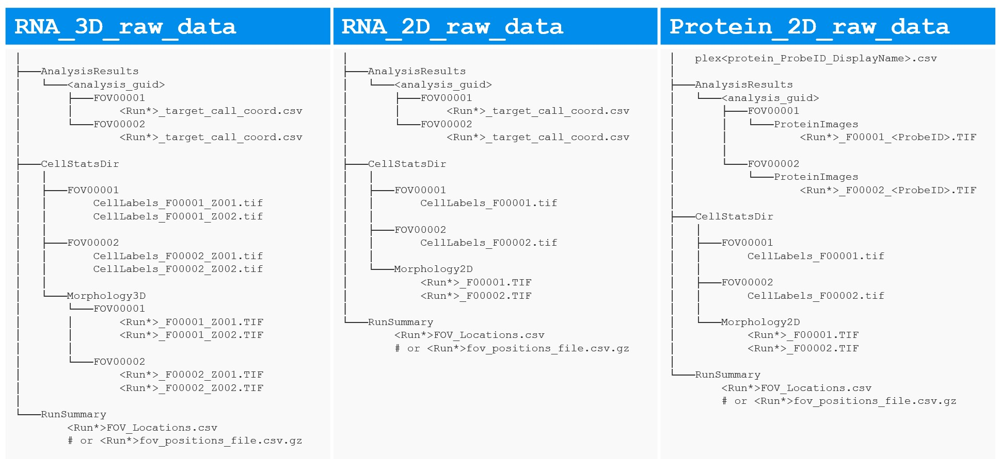
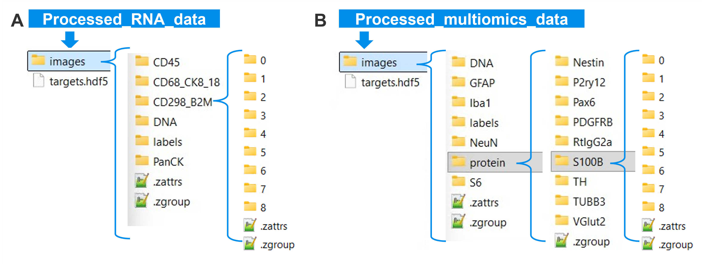

napari-CosMx with unified workspace showing aligned RNA and protein panels for the same sample, enabling side-by-side modality review.
Lidan Wu ![]()
Are you ready to accelerate your spatial biology discoveries? The latest napari-CosMx update empowers research teams to go beyond 2D, unlocking multi-omics (RNA + protein) exploration and volumetric 3D RNA analysis—all within a single, intuitive platform. Whether you’re visualizing complex datasets or building robust pipelines, these new features are designed to help you turn instrument output into actionable insights quickly, reproducibly, and at scale.
napari GUI (widget flow, recommended for most users)Like other items in our Analysis Scratch Space, the usual caveats and license applies.
whl file for napari-CosMx v0.5.0 from assets/napari-cosmx releases.Known supported versions for this release:
napari-cosmx is already working):Install the new wheel without dependencies to avoid unnecessary resolver conflicts (especially around vaex-related packages)
pip install --no-deps /path/to/napari_CosMx-0.5.0.0-py3-none-any.whlYou could use the latest napari==0.6.6. If needed, napari==0.5.4 is also a tested option.
# Linux / macOS
python3.11 -m venv .venv
source .venv/bin/activate
pip install napari==0.6.6
pip install /path/to/napari_CosMx-0.5.0.0-py3-none-any.whl# Windows PowerShell
py -3.11 -m venv .venv
.venv\Scripts\Activate.ps1
pip install napari==0.6.6
pip install C:\path\to\napari_cosmx-<version>-py3-none-any.whlThis post spotlights what’s new and how to get the most out of these features. For more details on installation and the basic 2D workflow, see our earlier posts.
| Feature | Description |
|---|---|
| 3D cell segmentation | Volumetric cell labels and segmentation outlines across Z planes for richer spatial context |
| Z-plane navigation | Instantly view any channel, segmentation, or transcript layer for a single Z plane as a 2D image—perfect for side-by-side comparison |
| Multi-omics (RNA + Protein) | Seamlessly load and explore RNA transcripts alongside protein expression images from a single dataset |
| Layer Group Manager | Organize napari layers into named groups; show/hide entire groups with one click for streamlined visualization |
| OME-TIFF export | Export OME-TIFF pyramids from the command line; 3D data is split into one CYX file per Z plane by default (QuPath-ready); use --volumetrics for full CZYX volume output |
napari GUI
napari-CosMx with unified workspace showing aligned RNA and protein panels for the same sample, enabling side-by-side modality review.

Roll Dimensions button on lower left of the viewer to see the side-view of tissue section.
Using napari-CosMx from the GUI is a simple two-step workflow:
napari-CosMx zarr format that is ready for napari viewer exploration.When you open a preprocessed folder through drag-and-drop, the exploration widget focuses on viewing panels and does not show the Stitch Images panel. If you want to process a new raw dataset, launch Stitch Images directly from the napari menu.
Open a terminal, activate your environment, and launch napari:
napariFrom the napari menu, choose Plugins → Stitch Images (napari CosMx). The plugin opens with the Stitch Images panel. Use it to turn raw data output exported from AtoMx® Spatial Informatics Portal (SIP) into a napari-ready dataset.

Stitch Images (napari CosMx) widget under napari plugins menu. (B) Stitch Images widget layout. (C) Example setup and log messages for stitching RNA 3D data. (D) Example setup and log messages for stitching multiomics (Protein + RNA) 2D data.
How it works:
Export raw data for your study from AtoMx SIP (see (earlier post)https://nanostring-biostats.github.io/CosMx-Analysis-Scratch-Space/posts/napari-cosmx-intro/#sec-export-raw-data) and organize them by slide. Each slide folder (Figure 4) should contain
CellStatsDir: contains per-FOV cell segmentation outcomes (FOV*/CellLabels_F*.tif) and morphological images (Morphology2D for 2D data or Morphology3D for 3D data).RunSummary: contains fov position csv file, *FOV_Locations.csv or *fov_positions_file.csv.gz (flat file).AnalysisResults/<guid>: contains per-FOV organized data for RNA transcripts (FOV*/*FOV*__complete_code_cell_target_call_coord.csv) or Protein images (FOV*/ProteinImages/*_F*_<ProbeID>.TIF).plex*.csv: required if it’s protein data; csv file listing the protein names (ProbID & DisplayName) included in your protein data.Click Browse Primary Folder and select your primary CosMx exported data folder. The folder must contain CellStatsDir and RunSummary sub-directories as mentioned above.
For multi-omics runs where RNA and protein data live in separate source folders, choose the protein run folder as the primary input. Then use the Browse Additional RNA Folder (Optional) button (Step 2) to point to the RNA run folder; the widget will auto-detect the correct
AnalysisResultspath inside it.
The plugin auto-detects whether the CellLabels_F*.TIF files carry a Z-index suffix (e.g. CellLabels_F00001_Z003.TIF) and sets Input ndim and Output ndim accordingly:
Detected input ndim: 3 (example: CellLabels_F001_Z001.TIF).
Default plan set to 3D -> 3D. You can override before stitching.The widget also auto-detects RNA and protein inputs and pre-checks the corresponding workflow checkboxes. You can manually override either checkbox before clicking Stitch.
Review the Planned stitch mode preview and adjust as needed:
| Setting | What it controls |
|---|---|
| Input ndim | Whether the raw files are 2D or 3D (Z-stack) tiles |
| Output ndim | Whether to write a volumetric (3D) or flat (2D) zarr store |
| Z slice | Which Z plane to extract when collapsing 3D → 2D |
| Z step (µm) | Physical Z spacing, e.g. 0.8 for CosMx standard RNA 3D runs; leave blank to read it from raw data |
| Run read-targets for RNA | Parse transcript coordinates into targets.hdf5 |
| Run stitch-expression for protein | Stitch protein expression images into the same store |
When stitching finishes, all morphological channels, segmentation masks, transcript tables (if RNA), and protein images (if protein) are written to an output directory that’s instantly ready for napari-CosMx data exploration.

Stitch Images (napari CosMx) plugin.

Stitch Images (napari CosMx) plugin. Output folder examples for RNA-only (A) and multiomics (B).
napari-CosMx with a multi-omics dataset.
Drag and drop your stitched output folder (which contains an images sub-folder) into the napari viewer canvas, or use File → Open Folder. Napari instantly detects the data and prompts you to choose a reader. Select napari-CosMx, check “Remember this choice,” and watch as the plugin loads your dataset and opens an interactive exploration environment tailored to your data.
Each exploration panel is designed for a specific analysis task. Here’s what you get:
| Panel | Shown when… |
|---|---|
| Dataset | Always — displays summary info and quick access to Layer Group Manager |
| Morphology Images | Always — channel images (DNA, PanCK, etc.) with Z-plane navigation for 3D |
| RNA Transcripts | When transcript data is present — overlay genes as point clouds with Z-filtering |
| Protein Expression | When protein images are present — visualize expression across channels |
| Color Cells | When cell labels are present — color cells by any metadata column |
To enable cell coloring, include your metadata file before opening the dataset: either a custom *_metadata.csv (with cell_ID column following the c_[slide]_[fov]_[CellId] pattern) or the AtoMX SIP-exported *_metadata_file.csv.gz placed at the root of your napari-ready data folder.
See it in action: Here’s a multi-omics dataset being explored interactively—loading RNA transcripts, overlaying protein expression images, and switching between modalities seamlessly in one workspace:
The exploration widget automatically enables only the panels relevant to your data. If your dataset has RNA-only data, you’ll see Morphology Images and RNA Transcripts panels. For multi-omics (RNA + protein), all relevant panels appear. Each panel supports 3D datasets with full Z-plane filtering.
At the top of the exploration widget, the Dataset panel provides a quick at-a-glance summary of your loaded data:
name: Breast-multiomics
folder: /data/Breast-multiomics
modalities: rna, protein
dimensions: 2DThis panel also contains the Layer Groups… button, giving you instant access to the Layer Group Manager for organizing and toggling your layers as you explore.
Browse and display all available morphology channels (e.g. DNA, PanCK, CD45). Simply select a channel, pick your preferred colormap, and click Add layer to overlay it on your canvas.
For 3D datasets, a Z plane field unlocks depth-specific exploration:
3) → loads that plane only as a lightweight 2D layer named DNA [z=3] — perfect for rapid comparisons without reloading the entire stackcurrent → locks to whichever Z plane you’re currently viewing, automatically updating as you scrollThis makes side-by-side depth comparisons effortless, as illustrated in the Z-plane Comparison for Metadata video below.
napari
In napari’s Dimensions controls (bottom-left), click on arrow sign to step through Z planes with the Z slider, or change the order of visual axes (roll dimensions) for side-view rendering (see Figure 2).
When protein data is present, this panel appears automatically. Select a protein channel, pick a colormap, and click Add layer to visualize expression patterns.
The same Z plane field available in Morphology Images also applies here, giving you identical control for exploring protein expression across tissue depth:
Protein: CD3
Colormap: red
Z plane: 2 ← loads only the Z=2 plane as 'CD3 [z=2]'When a gene and protein share the same name (e.g. B), napari-CosMx automatically assigns distinct layer names—B [rna] and B [protein], so you can load both and compare their spatial distributions side-by-side without confusion.
Visualize individual genes as point clouds overlaid on your morphology and protein layers. When targets.hdf5 is present, this panel activates automatically.
Controls:
Z-plane control (3D datasets only):
For volumetric datasets, the Z plane(s) field gives you precise control over which transcripts to display:
| Input | Behavior |
|---|---|
| (blank in 3D) | All Z planes (default) — complete volumetric view across the entire tissue section |
all |
Explicit “all planes” (same behavior as blank) |
2 |
Single plane (e.g. Z plane 2) — named GeneA [3D z=2] for easy identification |
2-4 |
Range of planes inclusive (Z 2 through 4) — named GeneA [3D z=2-4] |
1,3,5 |
Non-contiguous planes — named GeneA [3D z=1,3,5] |
current |
Locked to your currently viewed Z plane — updates dynamically as you navigate |
Layer names automatically include their Z selection for clarity, making it trivial to load multiple Z-plane overlays and toggle them independently.
For 3D datasets, the RNA Transcripts panel supports volumetric exploration. You can overlay transcripts across multiple Z planes, combine them with morphology channels at different depths, and visualize the spatial organization of genes in full 3D space. This is particularly powerful for detecting spatial relationships that only emerge when viewing the complete volume.
Here’s a real example of 3D RNA exploration with transcript overlays and side-view morphology:
For thin tissue sections of 5~10 µm thickness, standard 3D volumetric rendering can be difficult to visualize. Use napari’s axis reordering controls (the button labeled with cube icon in the bottom toolbar) to swap the Z, Y, and X axes and view your data from the side. This “side-view” perspective makes thin sections much easier to visualize and is demonstrated in the video above. You can toggle between standard XY view and side-view as needed during your analysis.
The Color Cells panel appears when cell labels are present. Use it to color cells by any metadata column (cell type, niche, cluster, etc.) from your cell *_metadata.csv file (or AtoMx-SIP exported flat file *_metadata_file.csv.gz) that is placed at the root of the napari-ready data folder.
Basic usage:
Keep multiple colored layers (comparison mode):
By default, each new metadata column selection replaces the previous coloring. To compare different metadata colorings side by side (e.g., cell type vs. niche vs. cluster), check the “Keep previous colored layers” checkbox before switching columns. This creates a new colored layer for each metadata column, allowing you to:
Now you can show/hide each colored layer independently to compare distributions across metadata dimensions.
For 3D datasets, you can deepen your analysis by coloring cells at different Z planes and comparing spatial distributions across depths. This workflow highlights how cell-type composition, niches, or clusters change through the tissue volume:
Here’s a practical demonstration of comparing cell metadata across multiple Z planes:
Managing dozens of layers across multiple Z planes and omics modalities can become unwieldy. Click Layer Groups… in the Dataset panel to open the Layer Group Manager as a separate dock widget.
What it does:
Groups are stored for the current session and are especially useful when switching between RNA morphology stacks and protein expression images (see example below).
All preprocessing steps are available as standalone console scripts, so they drop directly into shell scripts, Snakemake workflows, and Nextflow pipelines.
stitch-images \
-i /data/run/CellStatsDir \
-f /data/run/RunSummary \
-o /output/Liver-S2
read-targets /data/run/AnalysisResults/<run-id> -o /output/Liver-S2
stitch-expression \
-i /data/run \
-o /output/Liver-S2 \
--ndim 2# Full 3D output (Z × Y × X volumes per channel)
stitch-images \
-i /data/run/CellStatsDir \
-f /data/run/RunSummary \
-o /output/Liver-S2 \
--input-ndim 3 \
--output-ndim 3 The output zarr store keeps Z mapping in CosMx attributes, and downstream viewer/export steps read it automatically.
stitch-images \
-i /data/run/CellStatsDir \
-f /data/run/RunSummary \
-o /output/Liver-S2-z2 \
--input-ndim 3 \
--output-ndim 2 \
--zslice 2 # export only Z plane 2stitch-expression \
-i /data/run \
-o /output/Liver-S2 \
--ndim 2export-tiff command converts a stitched zarr store into pyramidal OME-TIFF for QuPath, FIJI, and other OME-aware tools.
Output file count is driven by a few settings:
--channels, --proteins, or --all.batch_0_..., batch_1_..., …).--volumetrics for one CZYX file.--dry-run to preview batches and estimated file count.# 2D dataset → CYX OME-TIFF
export-tiff -i /output/Liver-S2 -o /exports/Liver-S2 --all
# 3D dataset → one CYX OME-TIFF per Z plane (default)
export-tiff -i /output/Liver-S2-3d -o /exports/Liver-S2-3d --all
# Export only Z planes 1 and 3 (still splits into per-Z CYX files by default)
export-tiff -i /output/Liver-S2-3d -o /exports/subset \
--z-planes 1 3
# Volumetric export: one CZYX OME-TIFF for tools that handle full volumes
export-tiff -i /output/Liver-S2-3d -o /exports/volumetric \
--volumetrics
# Dry-run preview (no files written)
export-tiff -i /output/Liver-S2-3d -o /exports/Liver-S2-3d \
--segmentation --channels DNA --proteins CD3 CD8 PanCK \
--batchsize 5 --dry-run--dry-run to confirm batch count and expected output files.--all on very large protein runs; use targeted --channels and --proteins lists.--batchsize values (for example 5 to 10) to reduce memory pressure.--volumetrics); volumetric mode is for tools that support full CZYX volumes like FIJI.--libvips is an experimental memory-optimized option and depends on compatible tifffile +zarr + pyvips builds. Current working baseline for napari-cosmx is tifffile<2025 with zarr<3; if it does not work in your environment, rerun without --libvips.Use the Python API when you want script-level control in notebooks or pipelines.
import napari
from napari_cosmx.gemini import Gemini
viewer = napari.Viewer()
dataset = Gemini('/output/Liver-S2-3d', viewer=viewer)
print(dataset.is_3d) # True
print(dataset.z_slices) # [1, 2, 3, 4, 5] (physical Z values from the run)
print(dataset.modalities) # ('rna',) or ('rna','protein')
print(dataset.is_multiomics) # True if both RNA and protein are present
print(dataset.channels) # ['B', 'DNA', 'CK8_18', ...]
print(dataset.proteins) # ['CD3', 'CD8', 'PanCK', ...]# Load the full 3D segmentation volume
full_labels = dataset.add_cell_labels() # shape: (Z, Y, X)
full_seg = dataset.add_segmentation() # outlines, same volume
# Load a single Z plane as a lightweight 2D layer
z3_labels = dataset.add_cell_labels(z_plane=3) # name: 'Metadata [z=3]'
z3_seg = dataset.add_segmentation(z_plane=3) # name: 'Segmentation [z=3]'
# Load morphology at a specific Z
dna_z3 = dataset.add_channel('DNA', z_plane=3) # name: 'DNA [z=3]'# Add a protein channel
cd3 = dataset.add_protein('CD3')
# When a gene and protein share a name, modality tags prevent collisions:
# Gene 'B' → 'B [rna]'
# Protein 'B' → 'B [protein]'This is where interactive exploration becomes decision-ready analysis: draw study-relevant ROIs in the napari viewer, then convert those regions into metadata columns you can filter, summarize, and export.
# 1) In the napari UI, create a Shapes layer (name it 'ROI') and draw polygons.
# 2) Back in Python, retrieve that layer by name.
roi_layer = viewer.layers['ROI']
# 3) Add ROI membership columns to metadata.
# The layer name ('ROI') becomes a boolean column.
meta_with_roi = dataset.layers_to_metadata(['ROI'], shape_z_plane='current')
# 4) Use ROI-positive cells for downstream analysis.
roi_meta = meta_with_roi[meta_with_roi['ROI']]
# Example: summarize cell types in the selected region.
roi_meta['cell_type'].value_counts()
# 3D z-plane examples (polygons are drawn in 2D, then mapped to 3D labels):
# Current displayed z plane only
meta_current = dataset.layers_to_metadata(['ROI'], shape_z_plane='current')
# All z planes
meta_all = dataset.layers_to_metadata(['ROI'], shape_z_plane='any')
# Inclusive z range (by source z values)
meta_range = dataset.layers_to_metadata(['ROI'], shape_z_plane=(1, 3))
# Explicit z-plane list
meta_list = dataset.layers_to_metadata(['ROI'], shape_z_plane=[1, 3, 5])See earlier post on more ways to generate ROIs.
# If z_plane is omitted in a 3D dataset, behavior follows display mode:
# 2D display -> current Z only; 3D display -> all Z planes.
dataset.add_points(point_size=2)
# Force all transcripts across the full volume regardless of display mode
dataset.add_points(point_size=2, z_plane='any')
# Transcripts only at Z planes 2 and 3
dataset.add_points(point_size=2, z_plane=(2, 3))
# Plot a single gene with the same z-plane semantics
dataset.plot_transcripts('KRT18', color='yellow', point_size=3, z_plane='any')dataset.show_group_manager()This release brings together two core workflows in one plugin: multi-omics exploration and 3D RNA exploration, providing a seamless path from interactive review in napari to reproducible analysis in scripts and notebooks.
| Task | Widget | CLI | Python |
|---|---|---|---|
| Prepare raw data (stitch) | Stitch Images panel | stitch-images, stitch-expression, read-targets |
— |
| Open stitched data | drag-and-drop → reader prompt | — | Gemini('/out', viewer=viewer) |
| View channel at Z plane | Morphology Images — Z plane field | — | dataset.add_channel(name, z_plane=N) |
| View protein expression | Protein Expression panel | stitch-expression --ndim 2 |
dataset.add_protein(name) |
| View RNA transcripts | RNA Transcripts panel | — | dataset.add_points(z_plane=...) |
| Color cells by metadata | Color Cells panel | — | — |
| Color cells at a specific Z plane | Color Cells — Z plane field | — | — |
| Manage layer groups | Layer Group Manager | — | dataset.show_group_manager() |
| Select cells in ROI (RNA 3D) | — | — | dataset.layers_to_metadata(['ROI'], shape_z_plane=...) |
| Export OME-TIFF | — | export-tiff |
— |